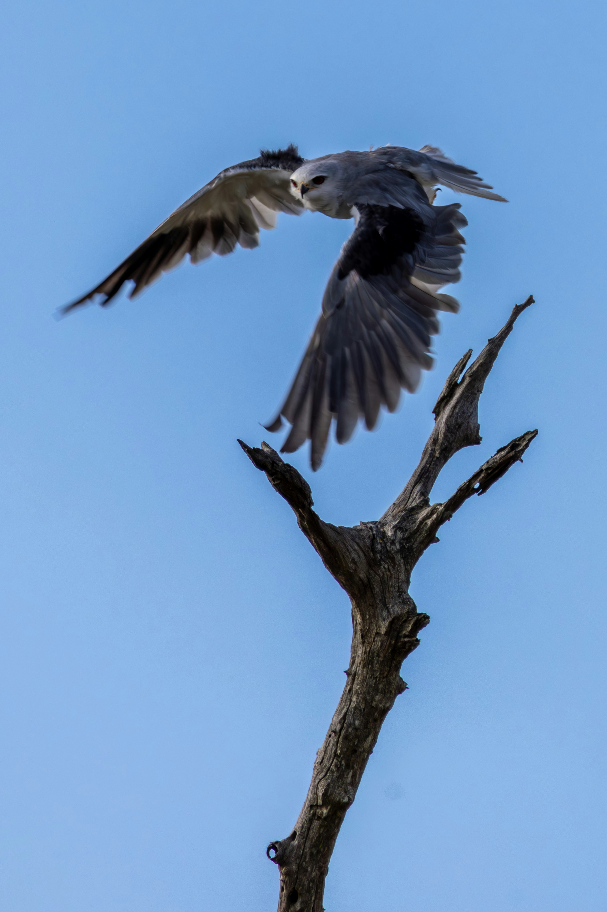

The Black-Winged Kite is a small and elegant bird of prey with a pale grey body, striking black shoulders and wing patches, and bright red eyes. It is often seen hovering almost motionless over grassland and agricultural fields while searching for prey below. Small rodents form an important part of its diet, although it also takes insects, lizards, and small birds. It favours open habitats and frequently perches on poles, wires, and isolated trees from which it can survey the ground. Compared with the similar Shikra, it is distinguished by the combination of features described above. Its preference for grasslands, farmland, open scrub, savannas, and other open country also helps separate it from species that use different habitats. Its characteristic behaviour, including frequently hovers almost motionless while hunting and may also perch on poles, wires, and isolated trees, provides another useful field clue. Taken together, these differences make it easier to distinguish from similar species when the bird is seen clearly.